기상기사 (2011-03-20 기출문제)
1과목: 기상관측법
1. 대기현상에 대한 설명 중 틀린 것은?
- 안개비- 직경이 0.5mm 미만의 작은 물입자의 다수가 하늘에서 내리는 현상이다.
- 박무- 극히 작은 수적이 떠 있는 현상으로, 수평시정이 1km이하인 경우를 말한다.
- 연무- 건조한 입자가 떠 있는 현상으로, 공기는 유백색으로 탁해 보인다.
- 싸락눈- 백색의 불투명한 얼음 입자의 강수로, 직경은 대략 2~5mm이다.
(정답률: 67%)

2. 다음 중 우박이나 뇌우에 의해 생기는 에코는?
- 대류성 에코
- 층상 에코
- 엔젤 에코
- 파랑 에코
(정답률: 70%)
3. 풍향에 관한 설명 중 틀린 것은?
- 풍향은 바람이 불고 있는 방향을 진방위에 의해 나타내는 것이 일반적이다.
- 풍향은 일반적으로 풍속이 강할 때에 자주 변한다.
- 풍향은 날씨 변화와 밀접한 관계가 있다.
- 풍향의 급격한 변화는 전선(front)의 통과를 나타낸다.
(정답률: 알수없음)
4. 다음 중 측기의 기본적인 성능이 아닌 것은?
- 정밀도
- 시차
- 감도
- 완화시간
(정답률: 80%)
5. 기압의 보정방법 중 관측장소의 고도를 평균해수면의 기압으로 수정해주는 것은?
- 기차보정
- 온도보정
- 중력보정
- 해면경정
(정답률: 100%)
6. 낙뢰 탐지 시 낙뢰의 위치 결정법이 아닌 것은?
- 도달시간차탐지법(TOA)
- 자계방향탐지법(MDF)
- 도달시간차 탐지법과 자계방향 탐지법을 결합한 방법(IMPACT)
- 섬광횟수탐지법(FCD)
(정답률: 79%)
7. 관측시각으로 진태양시를 사용하는 기상요소는?
- 기온
- 기압
- 바람
- 일사
(정답률: 100%)
8. 강수 관측에 관한 설명 중 틀린 것은?
- 고체성 강수는 융해시킨 후 측정한다.
- 측정가능한 이슬이나 서리는 강수량에 포함된다.
- 강수량의 관측은 관측소 부근의 강수량의 표준치가 될 수 있어야 한다.
- 이슬이나 서리가 있는 날은 강수 일수에 포함시킨다.
(정답률: 100%)
9. 포르틴(fortin)형 수은기압계에 대한 설명으로 틀린 것은?
- 온도의 급격한 변화가 없는 장소에 설치한다.
- 바람의 유통이 원활한 장소에 설치한다.
- 운반 시에는 수은이 동요하거나 관속에 공기가 들어가지 않도록 한다.
- 기압 관측 시 기압계 하단의 조정나사를 이용하여 수은면을 조절한다.
(정답률: 77%)
10. 우량계의 수수기 설치에 관한 설명 중 틀린 것은?
- 수수기는 지면으로부터 20cm 높이가 되도록 한다.
- 수수기 주위에는 잔디를 심어 빗방울이 튀어 들어오지 않게 한다.
- 수수구는 수평보다 주 풍향 쪽으로 약간 기울어지게 한다.
- 우리나라에서 사용되는 수수기의 규격은 구경 20cm, 높이 20cm이다.
(정답률: 알수없음)
11. 정지궤도 기상위성은 모두 영상기(imager)를 탑재하고 있다. 이들 영상기에서 측정되는 파장대가 아닌 것은?
- 0.31~0.38㎛
- 0.55~0.75㎛
- 3.70~4.00㎛
- 10.5~11.5㎛
(정답률: 82%)
12. 라디오존데에서 직접 관측하지 않는 기상요소는?
- 기온
- 기압
- 습도
- 바람
(정답률: 알수없음)
13. 쌍금속판(bimetal) 온도계는 금속의 어떠한 성질을 이용한 것인가?
- 금속의 기온에 대한 불변
- 두 금속의 합금성
- 팽창계수의 차이
- 금속의 기압과 습도의 불변성
(정답률: 알수없음)
14. 구름 분류와 종류의 연결이 틀린 것은?
- 상층운 - Ci, Cs
- 중층운 - As, Ac
- 하층운 - St, Sc
- 수직운 - Cu, Cc
(정답률: 80%)
15. WMO(세계기상기구)에서 제정한 지면 상태의 기호 중 얼어 있는 지면 상태를 나타내는 것은?
- ⊡
- ⊟
- ⧆
- □
(정답률: 90%)
16. 다음 중 시정장애를 유발하는 요인이 아닌 것은?
- ❜
- *
- ≡
- ⏉
(정답률: 100%)
17. 해나 달의 위치를 확인할 수 있을 정도로 엷어서 광한 혹은 채운 현상을 관측할 수 있는 구름이 아닌 것은?
- 권운
- 권적운
- 고층운
- 층운
(정답률: 55%)
18. 현재의 상대습도만이 문제되는 것이 아니라 습도의 과거경력이나 흡습성 물질의 실제 건조도를 표시하는 것은?
- 혼합비
- 비습
- 포차 (飽差)
- 실효습도
(정답률: 87%)
19. 기상레이더로 관측할 때 600Hz의 PRF를 사용하고 S밴드 레이더(파장 10cm)를 이용한다면 최대관측속도(m/s)는?
- 30
- 25
- 20
- 15
(정답률: 62%)
20. 레이더에서 주로 수 cm의 마이크로파를 이용하는 이유와 가장 거리가 먼 것은?
- 파장이 짧을수록 회절이 적고 직진성이 좋아 정확한 거리 측정이 가능하기 때문이다.
- 이 파장대에서는 지향성이 좋아서 방위분해능을 높일 수 있기 때문이다.
- 좁은 빔을 만드는 경우 안테나의 개구면적이 비교적 적게 되어 경량으로 만들 수 있기 때문이다.
- 이 파장대에서는 송신출력을 용이하게 얻을 수 있기 때문이다.
(정답률: 85%)
2과목: 대기열역학
21. 공기에 열을 공급하거나 빼앗지 않을 때 일어나는 과정은?
- 응결과정
- 단열과정
- 증발과정
- 응축과정
(정답률: 100%)
22. 응결과정에서 생성된 모든 것(물방울 또는 빙정)이 공기 속에 그대로 남아있는 경우는 어떤 과정인가?
- 습윤단열과정
- 건조단열과정
- 포화단열과정
- 위단열과정
(정답률: 85%)
23. 포화단열과정은?
- 등온과정
- 등적과정
- 비가역과정
- 가역과정
(정답률: 56%)
24. 다음 중 공기층이 모두 포화될 때까지 상승한 후 공기층이 갖게 되는 안정도는?
- 순압 불안정도
- 잠재 불안정도
- 경압 불안정도
- 대류 불안정도
(정답률: 72%)
25. 기압(P)과 비체적(α)을 좌표축으로 취한 건조공기에 대한 열역한선도의 그림에서 단열과정은?
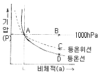
- A - B
- A - C
- A - D
- A - E
(정답률: 100%)
26. 포화단열감률이 건조단열감률보다 작은 이유는?
- 기화열
- 잠열
- 융해열
- 승화열
(정답률: 91%)
27. 열역학선도에서 온위가 일정한 선은?
- 등압선
- 등온선
- 건조단열선
- 습윤단열선
(정답률: 73%)
28. 정역학 방정식 -△P=ρg△z에서 음의 부호는 무엇을 의미하는가?
- 고도의 증가에 따른 기압 증가
- 고도의 증가에 따른 기압감소
- 고도의 증가에 따른 중력증가
- 고도의 증가에 따른 중력감소
(정답률: 알수없음)
29. 다음 중 온위를 정의하는 식은? (단, T는 기온, Po는 1000hPa, P는 기압)
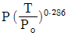
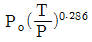
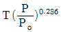
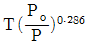
(정답률: 알수없음)
30. 압력을 P, 온도를 T라 할 때 단열과정에서는 TP-k는 일정하다. 여기서 K는? (단, CP: 정압열용량, CV :정적열용량, R*:보편기체상수)
- R*/CP
- R*/CV
- CP/CV
- CV/CP
(정답률: 알수없음)
31. 방안의 온도는 공기분자의 무엇과 관계되는가?
- 질량
- 평균속도
- 밀도
- 기압
(정답률: 75%)
32. PV diagram을 설명한 내용 중 옳은 것은?
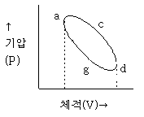
- agd 선상의 한 점은 acd선상의 한 점보다 높은 온도를 나타낸다.
- 경로 agd로 표시되는 과정은 열을 주위로 방출하는 과정이다.
- 경로 acd와 agd는 등온상태를 나타낸다.
- 면적 acdga는 그림에 표시된 과정대로 계에 의해서 행하여진 일을 나타낸다.
(정답률: 알수없음)
33. Skew T-log P diagram에 포함되어 있지 않은 것은?
- 포화단열선
- 건조단열선
- 등풍속선
- 포화혼합비선
(정답률: 93%)
34. 건조단열선과 등온선 사이의 각이 90°인 단열선도는?
- Skew T- log P선도
- Clapeyron선도
- Stuve선도
- Tephigram
(정답률: 55%)
35. 다음 중 비기체상수가 가장 작은 기체는?
- 수증기
- 건조공기
- 습윤공기
- 이산화탄소
(정답률: 59%)
36. 맑은 날 새벽에 이슬이 많이 맺혔을 때 다음의 냉각과정 중 일반적으로 어느 것이 가장 중요한 이슬발생 원인이 되겠는가?
- 야간 복사냉각
- 증발에 의한 냉각
- 단열팽창에 의한 냉각
- 한랭공기와 혼합에 의한 냉각
(정답률: 91%)
37. 다음 중 열의 단위로 쓰이지 않는 것은?
- erg
- joule
- caloric
- pascal
(정답률: 알수없음)
38. 불포화 단열팽창 과정에서 보존되는 것은?
- 상대습도
- 노점온도
- 혼합비
- 단열습구온도
(정답률: 80%)
39. 다음 설명 중 옳은 것은?
- 기체 내부에너지의 변화량은 기체 온도의 변화량에 정압 비열을 곱한 것과 같다.
- 건조 공기의 정적 비열은 정압 비열에 비기체상수를 더한 것과 같다.
- 온위는 비단열과정 동안 변하지 않으며 보존된다.
- 기압이 낮을수록 공기는 이상기체에 가까워진다.
(정답률: 60%)
40. 이슬점 온도에 대한 설명으로 옳은 것은?
- 공기가 건조 단열적으로 1000hPa 고도에 도달했을 때의 온도
- 건조공기가 습윤공기와 같은 밀도를 갖게 될 때의 온도
- 일정한 압력에서 공기가 포화될 때까지 증발하는 수증기에 의해 냉각될 때의 온도
- 기압과 혼합비가 일정한 상태에서 습윤 공기를 냉각시킬 때 포화가 일어나는 온도
(정답률: 알수없음)
3과목: 대기운동학
41. 다음 중 겉보기 힘인 것은?
- 기압 경도력
- 만유인력
- 마찰력
- 원심력
(정답률: 65%)
42. 지균풍의 연직 시어(shear)와 풍향이 같은 바람은?
- 온도풍
- 변압풍
- 경도풍
- 관성풍
(정답률: 84%)
43. 북반구에서 지균풍
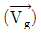
, 실제풍(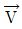
) 그리고 수평가속도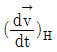
의 관계를 나타낸 그림으로 옳은 것은?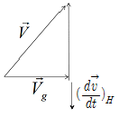
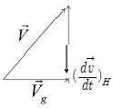
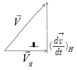
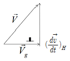
(정답률: 47%)
44. 태풍의 풍속구조는 경도풍으로 근사할 수 있다. 경도풍은 힘의 균형에 따라 여러 유형으로 분류할 수 있는데, 다음 중 태풍에 가장 적합한 힘의 균형은?
- 기압경도력= 원심력+ 전향력
- 기압경도력+ 원심력= 전향력(기압경도력>원심력)
- 기압경도력+전향력= 원심력
- 기압경도력+ 원심력+ 전향력(기압경도력<원심력)
(정답률: 70%)
45. K-이론에서 에디응력(eddy stress),
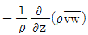
는 어떻게 표현 될 수 있는가? (단, Km은 에디 점섬을 나타낸다.)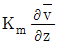
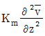
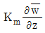
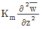
(정답률: 40%)
46. 유선함수(ψ)와 바람장
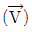
과의 관계식은? (단,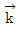
는 연직방향의 단위벡터이다.)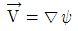
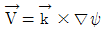
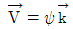
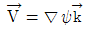
(정답률: 55%)
47. 와도방정식은 다음 중 어떤 식에서 유도되는가?
- 열역학 제 2법칙
- Poisson 방정식
- 운동방정식
- 상태방정식
(정답률: 82%)
48. 대기가 순압대기라고 할 때 공기덩어리가 적도에서 극 쪽으로 이동할 경우 나타나는 현상은?
- 상대와도는 감소한다.
- 상대와도는 증가한다.
- 절대와도는 감소한다.
- 절대와도는 증가한다.
(정답률: 70%)
49. 대기의 대순환과 관련된 사항 중 틀린 것은?
- 지구의 불균등한 복사 가열로 순환이 일어난다.
- 해륙분포의 지역적 차이로 인한 온도의 불균형으로 순환이 일어난다.
- 편서풍 파동은 대기의 운동에너지를 유효위치에너지로 전환시키는데 기여한다.
- 편서풍 파동은 열과 각운동량을 고위도로 수송한다.
(정답률: 알수없음)
50. 힘의 균형으로 정의되는 바람이 아닌 것은?
- 온도풍
- 지균풍
- 경도풍
- 마찰풍
(정답률: 50%)
51. 제트기류(jet stream)에 대한 설명으로 적합하지 않은 것은?
- 기온의 남북편차가 큰 겨울에 강하다.
- 겨울에는 전구를 둘러싸고 흐르는 경우가 많다.
- 여름에는 중심의 높이가 겨울의 경우보다 높아진다.
- 대류권 제트기류의 연중 강도 변화는 남반구가 북반구보다 크다.
(정답률: 73%)
52. 대기 순환에서 각운동량이 적도에서 중위도와 극으로 수송될 때 적도에서의 이 각운동량은 어떻게 보충되는가?
- 편동풍지역에서 마찰에 의한 생성
- 편서풍지역으로부터의 수송
- 지구자전으로 인한 생성
- 적도 상공에서의 생성
(정답률: 82%)
53. 대기 경계층에서 플럭스가 연직방향으로 비교적 일정한 층은?
- 지표층
- 혼합층
- 구름층
- 전이층
(정답률: 73%)
54. 상대와도(ξ)와 순환(C)의 관계를 적절하게 표현한 식은? (A는 순환이 일어나는 임의 폐곡선의 면적이다.)
- ξ=AC
- ξ=C/A
- ξC=A
- ξC/A상수
(정답률: 94%)
55. 연 평균 증발량이 가장 큰 위도대는?
- 적도
- 북위 10도
- 북위 20도
- 북위 30도
(정답률: 60%)
56. 공기덩이를 수직방햐으로 δZ 만큼 이동시켰을 때 이 공기덩이가 받는 가속도는 아래와 같이 표시된다면 이 때 N이 나타내는 것은?
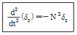
- Reynolds number
- Richardson number
- Brunt Vaisala frequency
- Rossby number
(정답률: 90%)
57. β-면 근사는 어떠한 가정을 요구하는가?
- 코리올리 매개변수를 일정하게 한다.
- 코리올리 매개변수를 위도의 함수로 한다.
- 위도에 따른 코리올리 매개변수를 일정하게 한다.
- 위도에 따른 코리올리 매개변수를 위도의 함수로 한다.
(정답률: 38%)
58. 경계층난류에 대한 설명 중 틀린 것은?
- 경계층난류는 대류적불안정 또는 시어불안정에 의해 생성된다.
- 난류에너지의 기계적 생성은 평균속도의 연직경도에 비례한다.
- 정적안정도가 커질수록 난류가 생성되는 층의 깊이는 증가한다.
- 경계층이 정적으로 불안정하면 리차드슨수는 음의 값을 갖는다.
(정답률: 59%)
59. 다음 중 토네이도의 바람을 가장 잘 나타낼 수 있는 것은?
- 지균풍
- 온도풍
- 경도풍
- 선형풍
(정답률: 77%)
60. 종관 규모의 연직 속도를 추정할 때 관측오차에 덜민감하고 효율적인 방정식은?
- 연속 방정식
- 열에너지 방정식
- 오메가 방정식
- 지위(geopotential height)경향 방정식
(정답률: 80%)
4과목: 기후학
61. 기후의 영년변화의 천문학적 원인이 아닌 것은?
- 지구축의 기울기 변화
- 지구궤도의 이심률 변화
- 태양의 광도변화
- 달의 광도변화
(정답률: 75%)
62. 월별 체감기후를 나타내는 클라이모 그래프의 세로축과 가로축에 주어지는 기후 요소는?
- 세로축 - 기온, 가로축 - 강수량
- 세로축 - 강수량, 가로축 - 기온
- 세로축 - 기온, 가로축 - 상대습도
- 세로축 - 상대습도, 가로축 - 기온
(정답률: 82%)
63. 우리나라에 영향을 주는 기단 중 양쯔강 기단의 특징은?
- 온난건조
- 고온건조
- 고온다습
- 온난다습
(정답률: 64%)
64. 열대 건조기후는 대륙의 서해안에 위치하며 해류의 영향을 받고 있다. 이러한 해류에 해당되지 않는 것은?
- 캘리포니아 해류
- 홈볼트(Humbolt)해류
- 쿠로시오 해류
- 벵겔라 해류
(정답률: 67%)
65. 다음 중 성질이 다른 바람은?
- 푄
- 치누크(Chinook)
- 보라(Bora)
- 높새바람
(정답률: 알수없음)
66. 온도가 낮아질수록 방출하는 복사의 최대 에너지 파장이 점점 길어짐을 나타내는 법칙은?
- Reyleigh의 법칙
- Planck의 법칙
- Stefan- Boltzmann의 법칙
- Wien의 법칙
(정답률: 69%)
67. 동기후학(dynamic climatology)에서 다루는 내용과 가장 거리가 먼 것은?
- 저기압
- 기단
- 전선
- 평균기온
(정답률: 알수없음)
68. 우리나라 겨울철의 전형적인 기압배치는?
- 넘고북저
- 남저북고
- 서고동저
- 평균기온
(정답률: 92%)
69. 습도의 연변화형중 우리가 있는 계절에만 습도가 높게 되는 것끼리 이어진 것은?
- 대륙성 - 열대성
- 해양성 -몬순성
- 몬순성 - 열대성
- 열대성 -해양성
(정답률: 알수없음)
70. 쾨펜(Koppen)은 무엇을 기준으로 열대기후, 온대기후, 냉대기후를 구분하였는가?
- 최난월의 평균기온
- 최한월의 평균기온
- 연 평균기온
- 연 최저기온
(정답률: 70%)
71. 다음 중 기후요소라고 볼 수 없는 것은?
- 연강수량
- 태양고도
- 적산온도
- 건조지수
(정답률: 70%)
72. 화산폭발 시 분출되는 가스 중 가장 많은 비율을 차지하는 기체는?
- 아황산가스
- 이산화탄소
- 메탄
- 수증기
(정답률: 50%)
73. 오호츠크해 기단에 대한 설명 중 가장 거리가 먼 것은?
- 북태평양 오호츠크해가 발원지이다.
- 한랭 다습하다.
- 동계에 불안정, 하계에 안정하다
- 장마전선과 관련이 있다.
(정답률: 93%)
74. 일반적으로 우리나라에서 연강수량이 가장 많은 곳은?
- 울릉도
- 서울
- 섬진강 하류
- 제주도 나부
(정답률: 93%)
75. 위도가 동일한 대륙에서 겨울에 강우가 비교적 많은 지역은?
- 동안과 내륙사이
- 동안
- 내륙
- 서안
(정답률: 73%)
76. mTk기단에 관한 설명으로 옳은 것은?
- 발원지에서부터 차다.
- 발원지에서보다 차다.
- 영향을 미치는 곳의 지표온도보다 차다.
- 영향을 미치는 곳의 지표온도가 더 차다.
(정답률: 65%)
77. 세계기상기구(WMO)에서는 전 지구의 기후자료를 통일하기 위해 몇 년간의 기상요소를 평균하여 기후자료로 사용하는가?
- 10년
- 20년
- 30년
- 50년
(정답률: 93%)
78. 퀘펜 기후분류에 대한 설명으로 적합하지 않는 것은?
- BS: 초원기후
- BW: 사바나 기후
- ET: 툰드라기후
- EF: 영구빙결기후
(정답률: 알수없음)
79. 다음 중 강수량의 영향인자와 가장 거리가 먼 것은?
- 기류의 수렴, 발산
- 대기층의 요란
- 지형
- 기온의 일교차
(정답률: 75%)
80. 세계의 기온분포 특징 중 옳은 것은?
- 대륙에서보다 해양에서 연교차가 크다.
- 북반구가 남반구보다 기온의 지역차가 작다.
- 북반구는 고위도로 남반구는 저위도로 갈수록 일교차가 크다.
- 중위도에서 남북간의 기온의 기울기는 여름철보다 겨울철에 더 크다.
(정답률: 알수없음)
5과목: 일기분석 및 예보론
81. 북반구 상공에서 마찰력이 무시되는 경우 바람이 고압대로 향하면?
- 아무 변화도 안생긴다.
- 가속된다.
- 감속된다.
- 점점 더 고압쪽으로 기울어 진다.
(정답률: 67%)
82. 온난전선 통과 시 바람이 변화하는 상태는?
- 풍향은 시계방향으로 변화하고 풍속은 증가한다.
- 풍향은 시계방향으로 변화하고 풍속은 감소한다.
- 풍향은 반시계방향으로 변화하고 풍속은 증가한다.
- 풍향은 반시계방향으로 변화하고 풍속은 감소한다.
(정답률: 84%)
83. 북족으로 이동하는 기류에 대하여 지구와도(Coriolis parameter)의 변화를 맞게 기술한 것은?
- 증가한다.
- 감소한다.
- 일정하다.
- 관계가 없다.
(정답률: 알수없음)
84. 지속적인 강수현상을 흔히 동반하는 전선은?
- 한랭전선
- 온난전선
- 정체전선
- 폐색전선
(정답률: 77%)
85. 등부피면(Isosteres)과 등압면(Isobares)이 교차하는 대기의 상태는?
- 순압성
- 전향성
- 경압성
- 대류성
(정답률: 46%)
86. 단연선도에서 850hPa면의 상승응결고도에서 포화단열선을 따라 올라가 500hPa면과 만난 점의 온도T를 500hPa면의 실제온도 T에서 뺀 값을 무엇이라고 하는가?
- SSI
- LSI
- FNI
- MSI
(정답률: 100%)
87. 지상일기도를 만들 때 사용되는 가장 대표적인 자료는?
- 기압
- 기온
- 바람
- 노점온도
(정답률: 82%)
88. 그림과 같이 북상하고 있는 태풍의 위험반원을 나타낸 위치는?
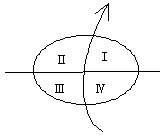
- Ⅰ과Ⅱ
- Ⅱ과Ⅲ
- Ⅲ과Ⅳ
- Ⅰ과Ⅳ
(정답률: 91%)
89. 다음 중 한랭전선에서 잘 나타나는 구름의 종류는?
- Cb
- As
- Ac
- Sc
(정답률: 85%)
90. 집중호우가 발생하기 쉬운 경우가 아닌 것은?
- 하층 제트가 존재할 때
- 장마전선 상에 저기압이 발달할 때
- 500hPa에 난기가 존재할 때
- 태풍이 북상할 때
(정답률: 67%)
91. 흐리고 바람이 서풍으로 125knot 가 불고 있을 때 국제기상 전문의 Nddff로 가장 알맞은 것은?
- 827125
- 8270125
- 82700 00125
- 82799 00125
(정답률: 83%)
92. Blocking이 나타날 때의 현상에 맞지 않는 것은?
- 편서풍이 갈라져 흐른다.
- 기압계의 이동이 빨라지기도 한다.
- 기압계의 이동이 느리다.
- 기압계의 서진현상이 나타나기도 한다.
(정답률: 92%)
93. 태풍이 이동할 때 그의 전향점은 주로 어디인가?
- 아열대지방
- 온대지방
- 한대지방
- 아한대지방
(정답률: 80%)
94. 현재일기를 일기도에 기입할 때 사용되는 기호로 틀린 것은?
- 눈: *
- 비: •
- 소나기:
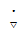
- 황사: ∞
(정답률: 75%)
95. 북반구에서 동진하는 저기압의 중심이 관측자의 북쪽을 통과할 때 관측자가 기록하게 되는 풍향의 변화로 옳은 것은?
- 남서풍 → 서풍 → 북서풍
- 북서풍 → 북풍 → 북동풍
- 북동풍 → 동풍 → 남동풍
- 남동풍 → 남풍 → 북동풍
(정답률: 72%)
96. 국제 기상 전보식에서 4PPPP군의 PPPP는 다음 중 어느 것을 나타내는 부호인가?
- 해면기압
- 현지기압
- 기압변화량
- 24시간 강수량
(정답률: 알수없음)
97. 일반적으로 강풍대의 축에서 소용돌이도 값은?
- “+” 소용돌이도의 최대값
- “-” 소용돌이도의 최대값
- 소용돌이도 값이 0
- “+”와 “-” 소용돌이도 값이 교차
(정답률: 84%)
98. 단열도상에서 상승응결고도(LCL)는 어떻게 구하는가?
- 지상의 노점온도를 지나는 포화혼합비선과 온도를 지나는 건조단열선이 만나는 점의 고도
- 기온의 상탯곡선과 지상기온을 지나는 건조단열선과 만나는 점의 고도
- 지상의 노점온도를 지나는 포화혼합비선과 기온의 상태곡선과 만나는 점의 고도
- 지상의 온도를 지나는 건조단열선과 노점온도를 지나는 습윤단열선이 만나는 점의 고도
(정답률: 39%)
99. 300hPa 등압면의 표준고도는 약 얼마인가?
- 15km
- 10km
- 5km
- 3km
(정답률: 84%)
100. 상층의 따뜻한 공기로부터 내리는 비가 지상의 찬 공기층을 횡단할 때 생기는 안개는?
- 전선무
- 활승무
- 이류무
- 복사무
(정답률: 79%)